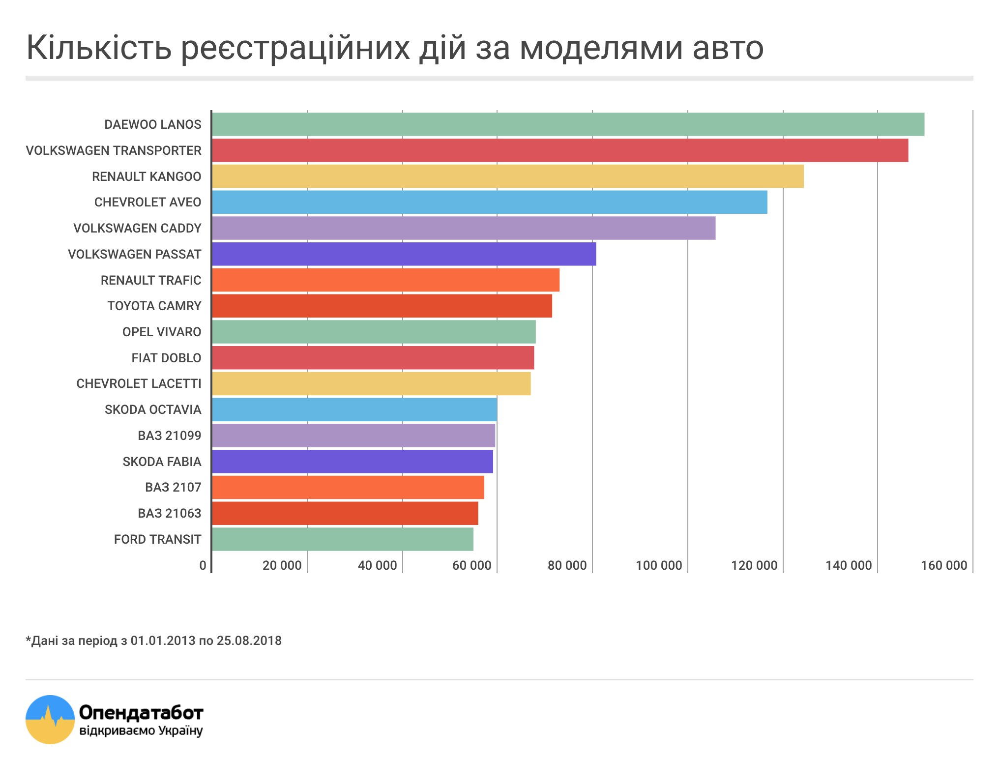

МВД открыло сведения о транспортных средствах и их владельцах
Теперь по номеру машины можно узнать где/когда она была зарегистрирована и год ее производства.
Что случилось
МВД опубликовало сведения о транспортных средствах и их владельцах
Почему это важно
Теперь по номеру машины можно узнать где/когда она была зарегистрирована и год ее производства.
Открытые данные Министерства внутренних дел существенно упростят доступ к информации об автомобилях и их владельцах.
Эта информация и ранее была публичной, однако, чтобы ее получить, необходимо было подать запрос на сайте МВД и пройти идентификацию.
Теперь, по номеру автомобиля можно:
- узнать характеристики машины
- Цвет,vin-номер и тд.
- проверить когда машина была зарегистрирована
- Год,Число,Месяц.
- увидеть другие транспортные средства владельца
- Во сладении в данный момент.
- другие машины, которым был присвоен этот номер за последние 5 лет
- В независимости от региона.
Самые популярные модели
Как улучшить данные?
Во время регистрации авто в Реестр записывается VIN-номер — уникальный идентификатор автомобиля.
Когда МВД добавит VIN-номера к набору данных,
это позволит отследить всю историю машины и проверить ее перед покупкой.
Как проверить наличие штрафа ПДД
Для проверки неоплаченных
штрафов за нарушения правил дорожного движения
отправьте чатботу ваш код плательщика налогов ИНН.
Чатбот покажет все актуальные штрафы, которые сразу же можно будет погасить.
Также в Опендатобот можно
оплатить штраф по номеру постановления.
Квитанцию не нужно будет отправлять в МВД — бот сделает это самостоятельно.